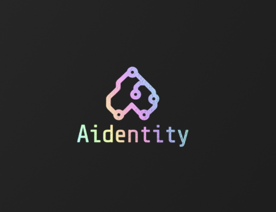
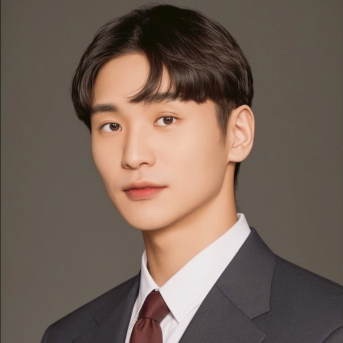
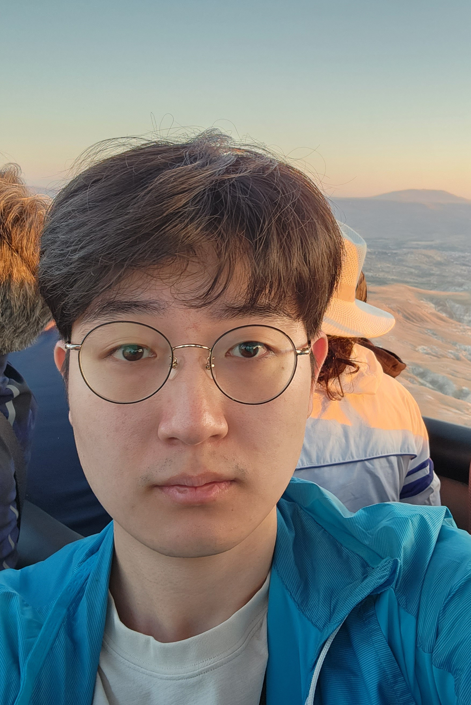
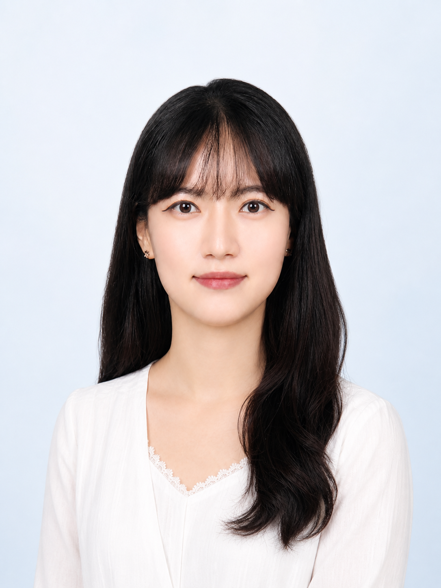

사람을 돕는
기술의 정체성.

Aid + Entity실제 도움이 되는 기술
AI + Identity인간을 중심에 두는 AI
a ID + Entity나의 신호에서 실천으로
 문의
문의
Aid + Entity실제 도움이 되는 기술
AI + Identity인간을 중심에 두는 AI
a ID + Entity나의 신호에서 실천으로
 02 · 건강 웹서비스예측 정보는 진단·처방을 대신하지 않습니다.
02 · 건강 웹서비스예측 정보는 진단·처방을 대신하지 않습니다. 03 · 마을에서 시작하는 놀이
03 · 마을에서 시작하는 놀이더 간단하게 다가가기 위한 도전
오늘의 행동으로 이어지는 도움.
이해와 선택을 먼저 존중.
작은 신호를 나다운 행동으로.
한옥·벚꽃·연못 사이를 걷고 십이지신 주민과 인사해 보세요. 건강정보 입력 없이 체험할 수 있습니다.
간당간당4D 마을 둘러보기이동·인사 체험 가능 · 건강 미션·가족 연동은 후속 개발
CEO · 대표

CTO · 기술

CERO · 대외협력

개발자 · 예비 멤버
간당간당을 만드는 Aidentity의 이야기입니다.
협업 이야기 나누기